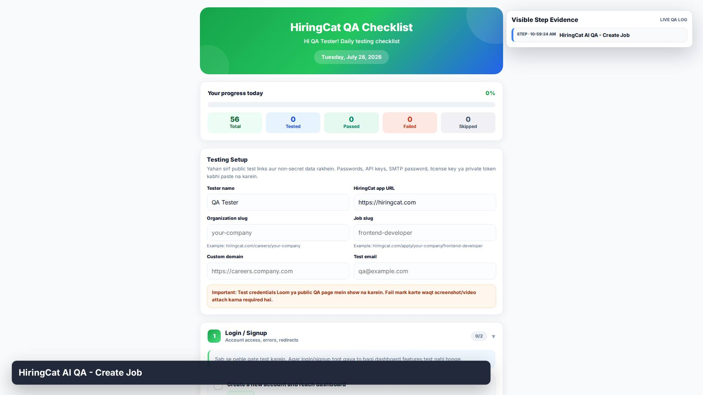
1. STEP
HiringCat AI QA - Create Job

HiringCat AI QA - Create Job
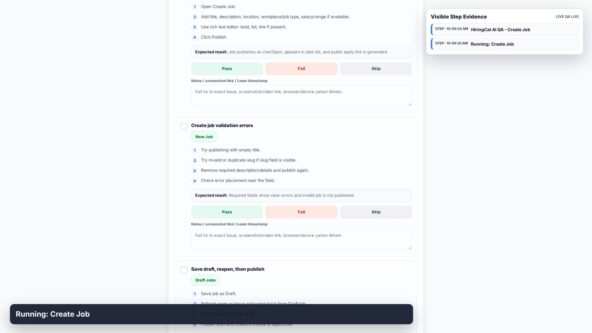
Running: Create Job
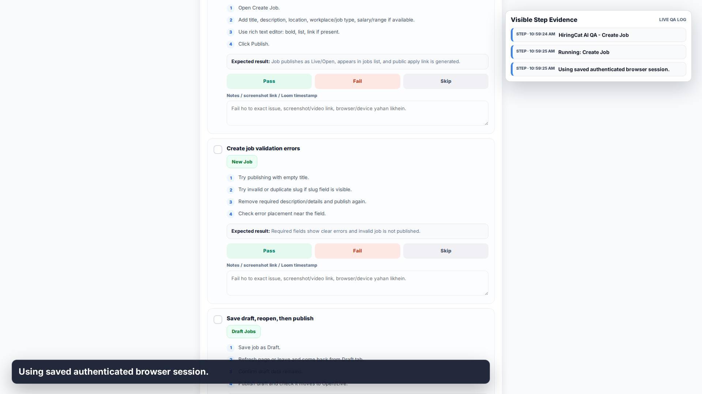
Using saved authenticated browser session.
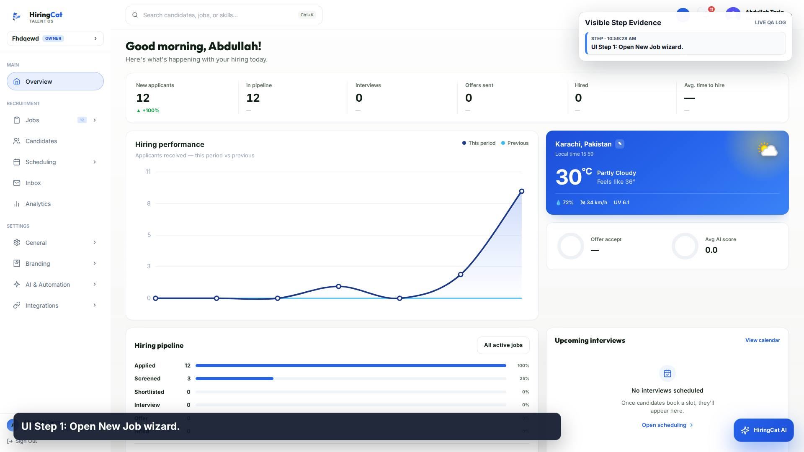
UI Step 1: Open New Job wizard.
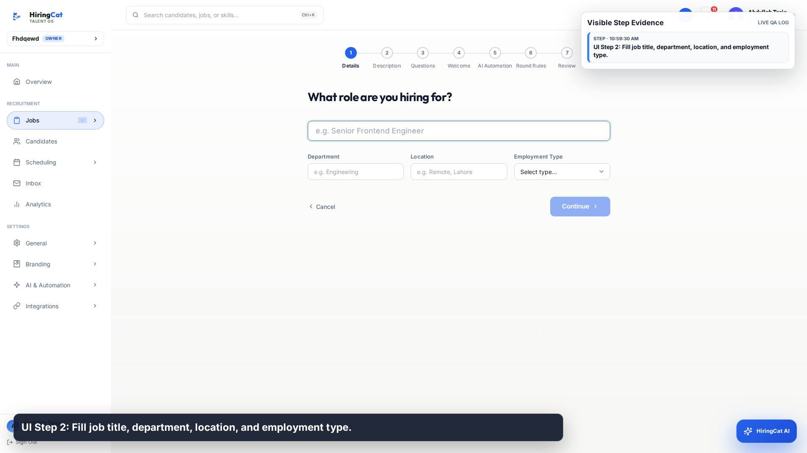
UI Step 2: Fill job title, department, location, and employment type.
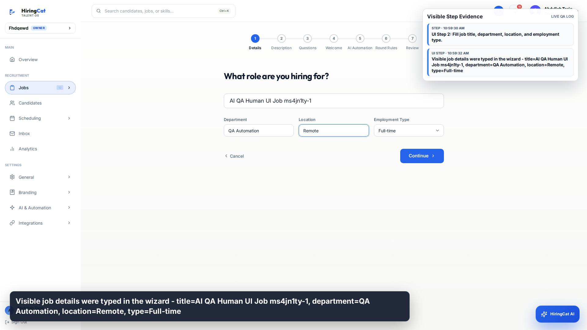
Visible job details were typed in the wizard - title=AI QA Human UI Job ms4jn1ty-1, department=QA Automation, location=Remote, type=Full-time
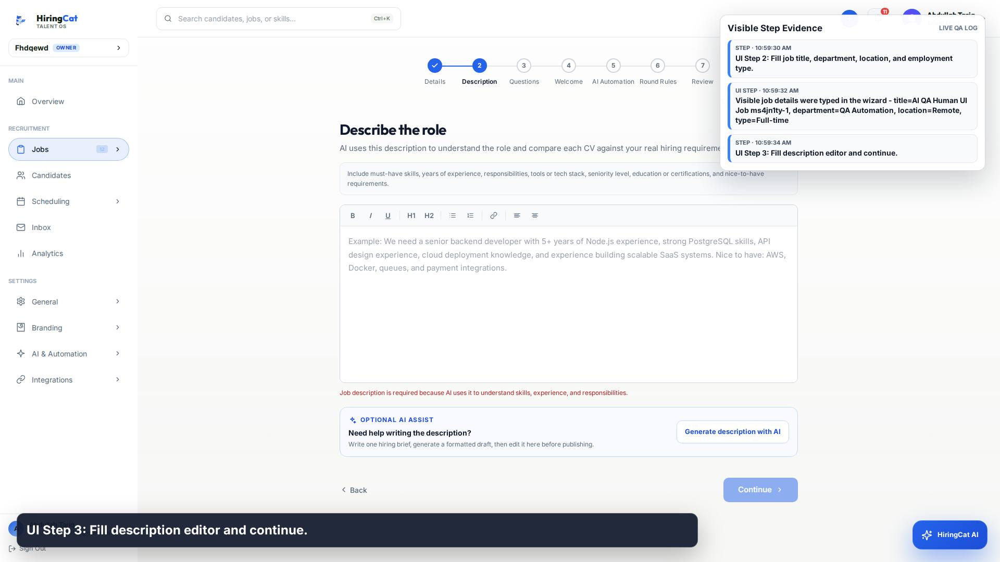
UI Step 3: Fill description editor and continue.
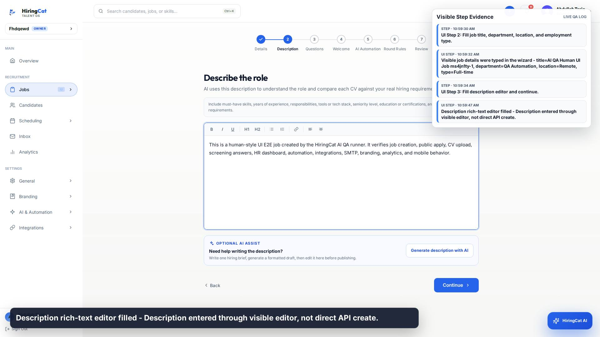
Description rich-text editor filled - Description entered through visible editor, not direct API create.
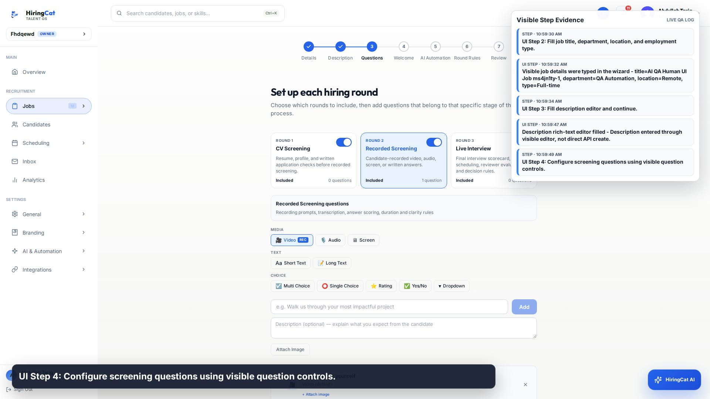
UI Step 4: Configure screening questions using visible question controls.
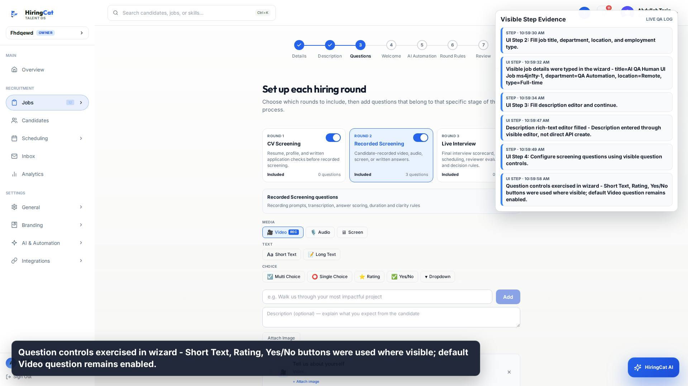
Question controls exercised in wizard - Short Text, Rating, Yes/No buttons were used where visible; default Video question remains enabled.
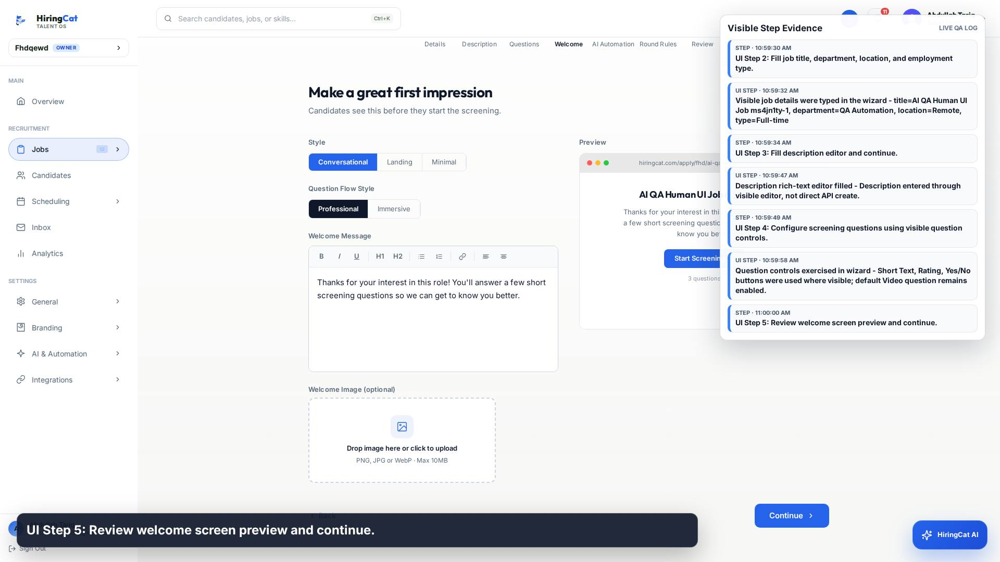
UI Step 5: Review welcome screen preview and continue.
UI Step 6: Confirm AI automation thresholds and continue.
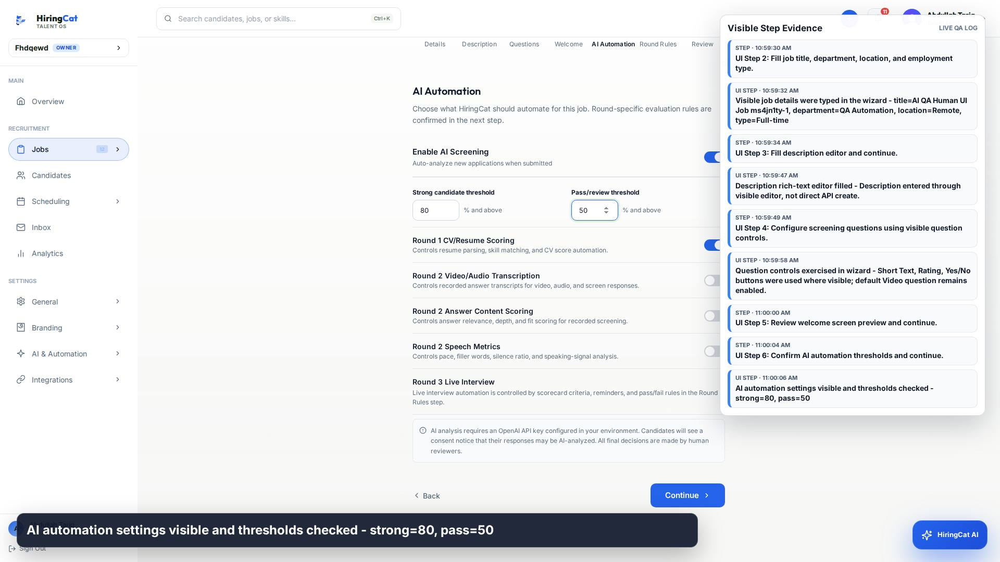
AI automation settings visible and thresholds checked - strong=80, pass=50
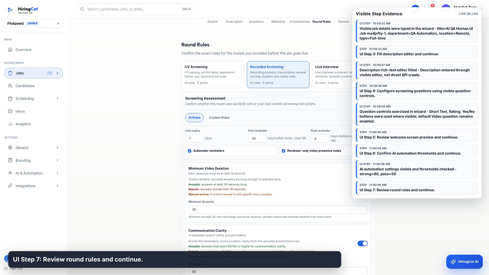
UI Step 7: Review round rules and continue.
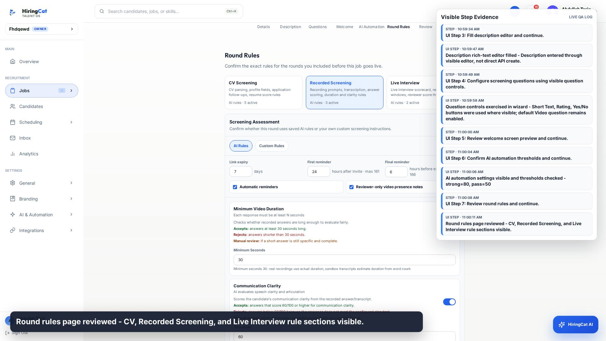
Round rules page reviewed - CV, Recorded Screening, and Live Interview rule sections visible.
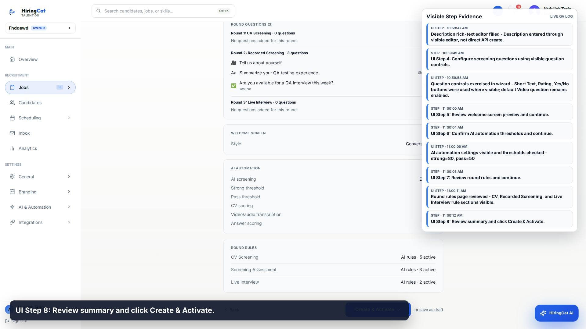
UI Step 8: Review summary and click Create & Activate.
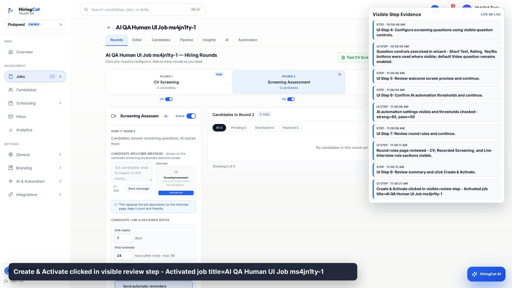
Create & Activate clicked in visible review step - Activated job title=AI QA Human UI Job ms4jn1ty-1
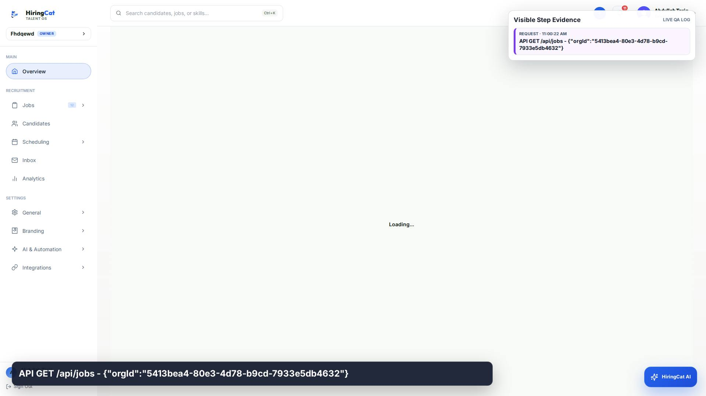
API GET /api/jobs - {"orgId":"5413bea4-80e3-4d78-b9cd-7933e5db4632"}